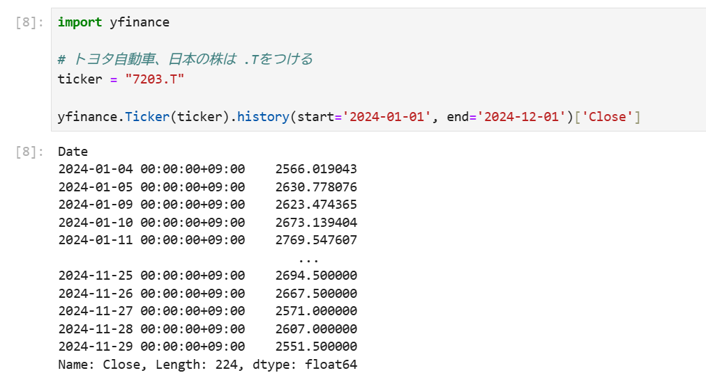

鉄は熱いうちに打て
=============================
PyLadies Tokyoの合宿に参加（1日目）¶
2024-12-14
PyLadies Tokyoの合宿に来ています。
私が参加している PyLadies Tokyo は、Pythonが好きな女性を結ぶ国際的なコミュニティです。日本には、東京・京都・沖縄の支部があります。私は東京でスタッフをしています。2015年から参加しているので、そろそろ10年ですね。スタッフになった理由はスタッフの人たちが仲良さそうで羨ましかったからです。
PyLadies Tokyoは毎月イベントを開催していて、年に1回くらいは宿泊を伴う合宿を行っています。セキュリティの関係で、場所は参加者にだけ明かされますがだいたい関東で開催されています。私は家族以外と旅行に行く機会がないので、参加できてうれしいです。
やることは、親睦ともくもくです。会議室がある宿に泊まって、日中はもくもくし、夜は飲みながら話したりします。多くのエンジニアの女性と話せる機会はなかなかないので、かけがえのない時間です。他の女性の働き方や考え方を聞くことにより自分の将来についても考えたり、自身の価値観や生き方を確認する良い機会にもなります。
1日目にやったことを書きます。
まず、 AI校正Shodo Advent Calendar 2024 の16日目の記事を書きました。
あと、昨年の11月に開催されたfinpyのイベント 位置情報の基礎と実践的ハンズオン でいただいた本 Python時系列分析クックブック 前処理 を学習しました。

この書籍はタイトルの通り分析を始める前に行う前処理の方法が紹介されています。各データソースからのデータの取得、書き出し、時系列データの変換、欠損値の扱い、外れ値の検出までが紹介されています。前から順に学んでいくというよりは、自分に必要な箇所を利用する感じの書籍です。
レシピ11「APIを使ってサードパーティの金融データを読み込む」で紹介されている pandas-datareaderを実行しましたが、Yahoo!ファイナンシャルのデータを取ろうとしたらエラーが発生しました。
調べたら、代わりに yfinance を使うみたいでした。yfinanceを使ったら無事にデータを取得できました。ただ、 README に自己責任で使ってね的なことが繰り返し書いてあるので使う前に読んだ方が良さそうです。
{kind=link}